PSI: Richly Controllable Physical World Modeling
In the PSI paper we introduced a method for building a richly controllable world model. Here, we show examples of using the newly released PSI-0.5 model to implement a variety of complex physical prompts such as might be used in robotic manipulation scenarios.
In PSI, control commands become prompt handles, so the model starts to feel less like an image sequence generator and more like a visual analogue of an LLM: the prompt determines the capability. In practice, precise controls are just different prompt strings and sparse token values. The simplest prompt asks PSI to continue a scene by predicting the next RGB frame; in the examples below, we show how different prompts can elicit complex and precise behaviors from the model.
from PIL import Image
from transformers import AutoModel
predictor = AutoModel.from_pretrained(
"StanfordNeuroAILab/psi0_5",
trust_remote_code=True,
device="cuda",
)
rgb1 = predictor.generate(
"rgb0->rgb1",
rgb0=Image.open("scene.png"),
)- Intuitive Physics
- Cause And Effect
- Articulated Objects & Mechanisms
- Human Articulations
- Dexterous / Precision Manipulation
- Deformable Materials
- Fluids
- Compositional Reasoning
- Novel View Synthesis
Intuitive Physics
Intuitive Physics
Unconditional rollouts and simple physical scenes where PSI predicts how objects continue moving through contact, gravity, and momentum.
Ball Roll
Click to expand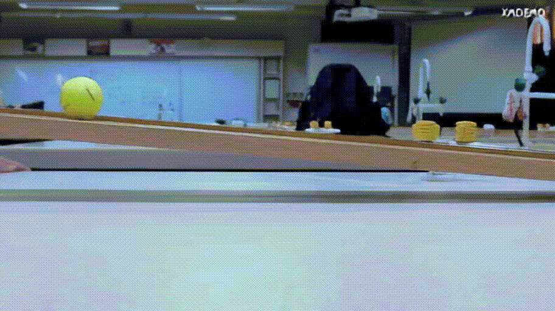
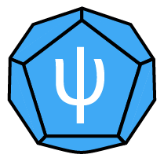
rgb0->rgb1,rgb2,...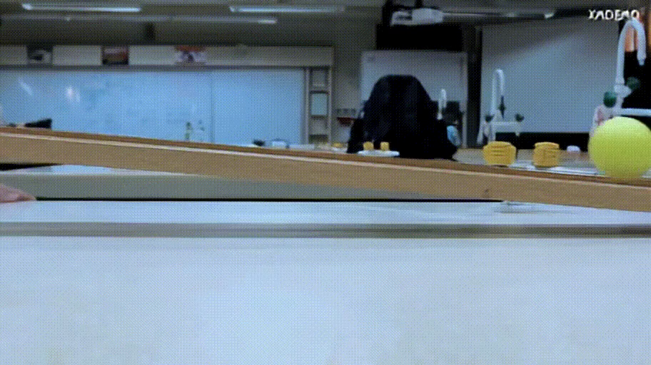

frames = predictor.generate(
"rgb0->rgb1,rgb2,rgb3,rgb4,rgb5,rgb6,rgb7",
rgb0=Image.open("ball_ramp.png"),
)Car Driving
Click to expand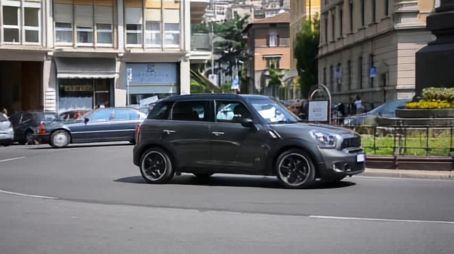
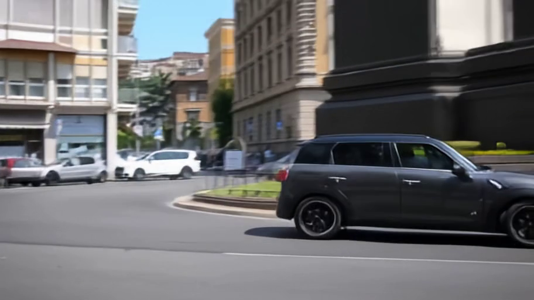
This unconditional prediction asks PSI to continue the scene from a single roundabout frame and display the cleaner early future frame.
rgb1, rgb2 = predictor.generate(
"rgb0->rgb1,rgb2",
rgb0=Image.open("car_roundabout.png"),
)Block-Slide
Click to expandStarting from GT RGB0, PSI first predicts the motion and next frame unconditionally with rgb0->f01,rgb1. We then ask for rgb2 through rgb5 in one future-frame generation call.
f01, rgb1 = predictor.generate(
"rgb0->f01,rgb1",
rgb0=Image.open("block_slide_rgb0.png"),
)
rgb2, rgb3, rgb4, rgb5 = predictor.generate(
"rgb0,rgb1->rgb2,rgb3,rgb4,rgb5 ",
rgb0=Image.open("block_slide_rgb0.png"),
rgb1=rgb1,
)Support Push
Click to expand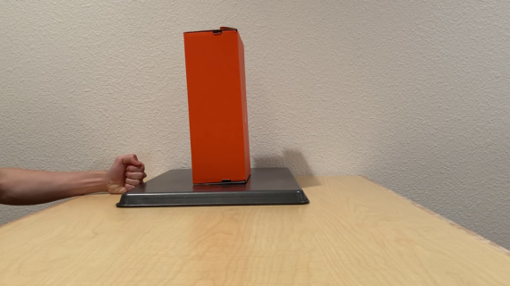
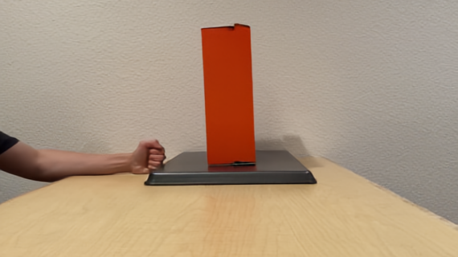
A sparse move patch on the hand pushes the support to the right, and PSI infers the coupled object motion from that local intervention.
rgb1 = predictor.generate(
"rgb0,f01->rgb1",
rgb0=Image.open("support_push.png"),
f01=flow_prompt(patches=[((70, 221), (168, 221))]), # move hand right
)Apple Push and Rotate
Click to expand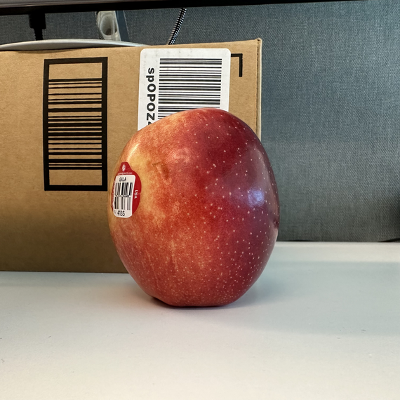
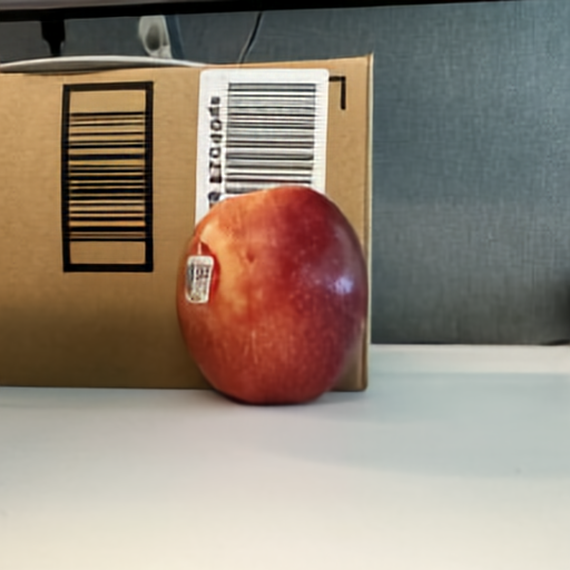
The same apple scene branches into two PSI predictions from sparse flow prompts: one pushes the apple backward into the box, while the other rotates the apple in place.
push_flow, push_rgb1 = predictor.generate(
"rgb0,f01->f01,rgb1",
rgb0=Image.open("apple_rgb0.png"),
f01=flow_prompt(
patches=[((400, 286), (-111, -34))], # push apple inward
),
)
rotate_flow, rotate_rgb1 = predictor.generate(
"rgb0,f01->f01,rgb1",
rgb0=Image.open("apple_rgb0.png"),
f01=flow_prompt(
patches=[
((343, 234), (-74, -22)), # top turns left
((268, 399), (78, 21)), # bottom turns right
],
),
)Billiards
Click to expand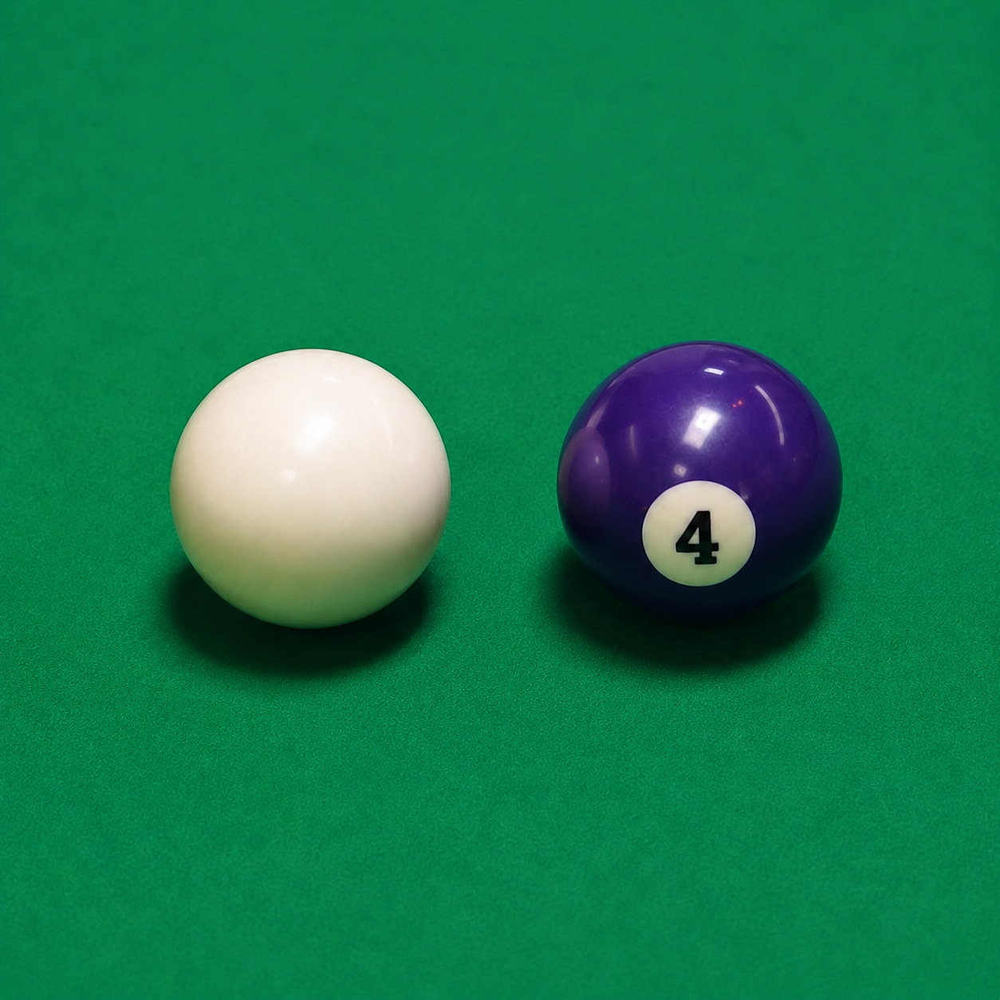
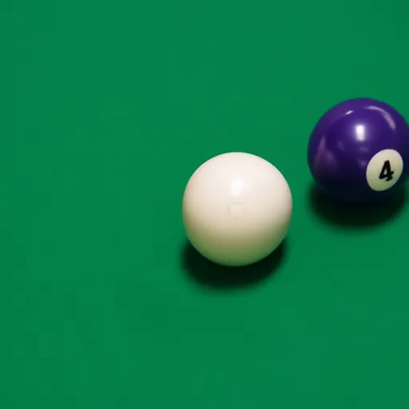
Both billiards paths use the same initial frame and a zero camera-motion token. The only difference is the RGB patch prompt on the cue ball: one moves right to hit the second ball, and the other moves up-left away from it.
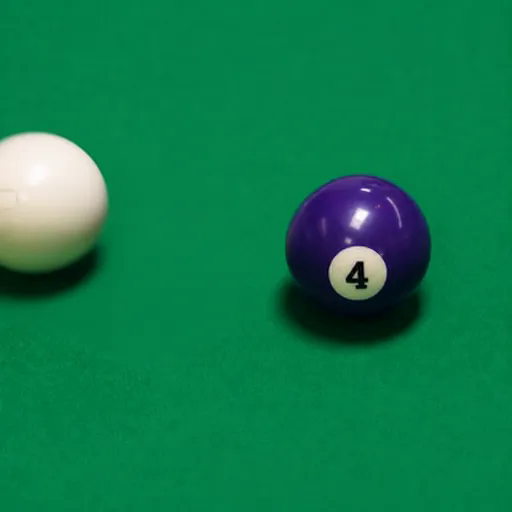
zero_camera = camera_prompt(
translation=(0.0, 0.0, 0.0),
rotation=(0.0, 0.0, 0.0),
)
hit_second_ball = predictor.generate(
"rgb0,rgb1,c01->rgb1",
rgb0=Image.open("billiards_rgb0.png"),
rgb1=rgb_prompt(poke=((390, 615), (710, 615))),
c01=zero_camera,
)
move_away = predictor.generate(
"rgb0,rgb1,c01->rgb1",
rgb0=Image.open("billiards_rgb0.png"),
rgb1=rgb_prompt(poke=((390, 615), (90, 315))),
c01=zero_camera,
)Block Tower
Click to expand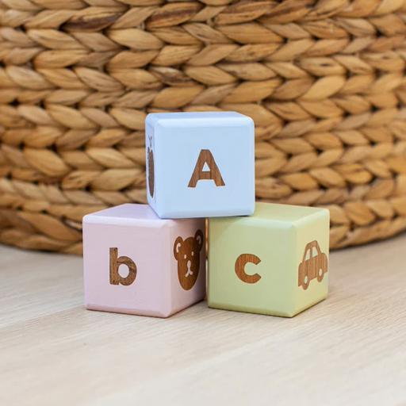
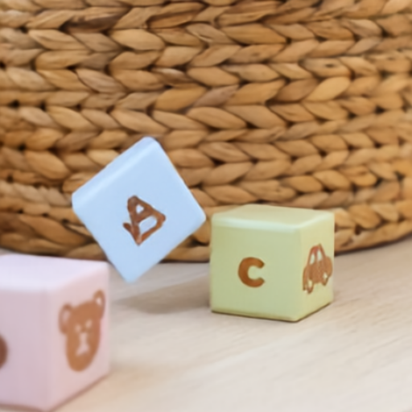
A sparse optical-flow prompt pulls the pink B block down and left. PSI densifies that prompt, renders depth, and predicts the next RGB frame.
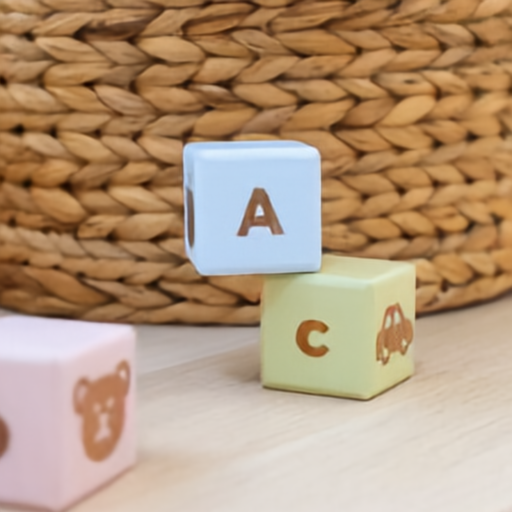
dense_flow, depth1, rgb1 = predictor.generate(
"rgb0,d0,f01->f01,d1,rgb1",
rgb0=Image.open("blocks.png"),
d0=Image.open("blocks_d0.png"),
f01=flow_prompt(poke=((160, 334), (91, 402))),
)Cause And Effect
Cause And Effect
Controlled interventions where a small prompt changes what happens next in the scene.
Sliding Card Deck
Click to expand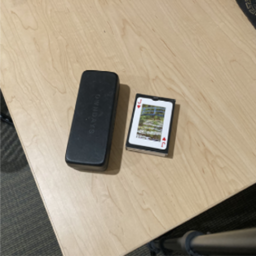
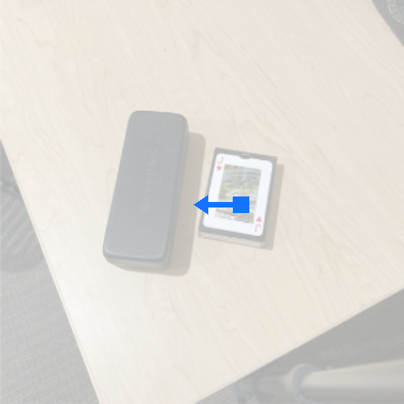
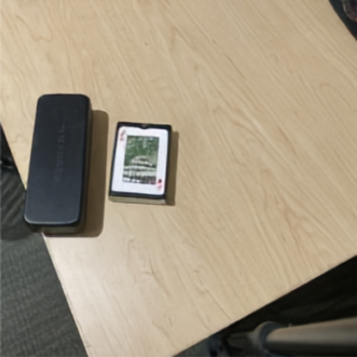
The same RGB0 branches into two PSI predictions from a sparse prompt at the same card-deck location: one moves left into the glasses case, while the other moves right and away from it.
hit_flow, hit_rgb1 = predictor.generate(
"rgb0,f01->f01,rgb1",
rgb0=Image.open("card_deck.png"),
f01=flow_prompt(poke=((305, 259), (245, 259))), # slide left into case
)
move_flow, move_rgb1 = predictor.generate(
"rgb0,f01->f01,rgb1",
rgb0=Image.open("card_deck.png"),
f01=flow_prompt(poke=((305, 259), (355, 259))), # slide right away
)Mango Bowl
Click to expand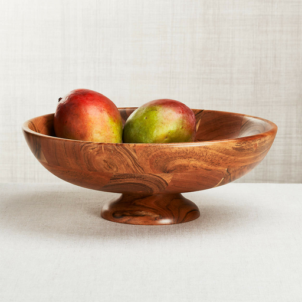
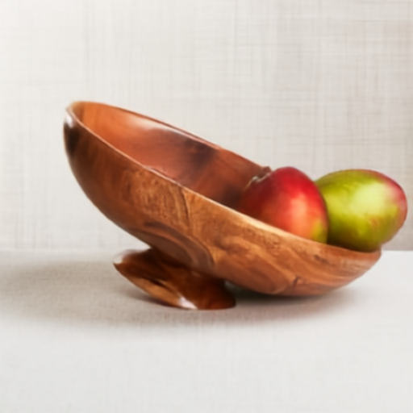
A clockwise bowl-rotation prompt changes the downstream state of the fruit and bowl. PSI densifies the motion, predicts the next depth map, and renders RGB1.
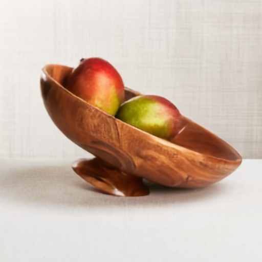
dense_flow, depth1, rgb1 = predictor.generate(
"rgb0,d0,f01->f01,d1,rgb1",
rgb0=Image.open("mango_bowl_rgb0.png"),
d0=Image.open("mango_bowl_d0.png"),
f01=flow_prompt(
patches=[((246, 282), "clockwise")],
),
)Coke Can Crush
Click to expand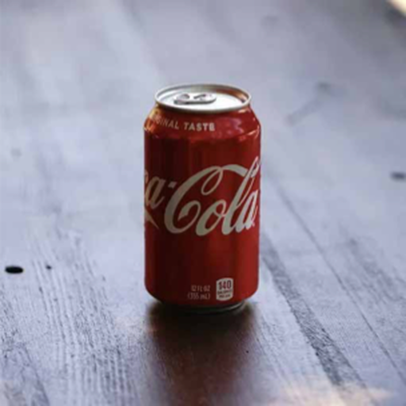
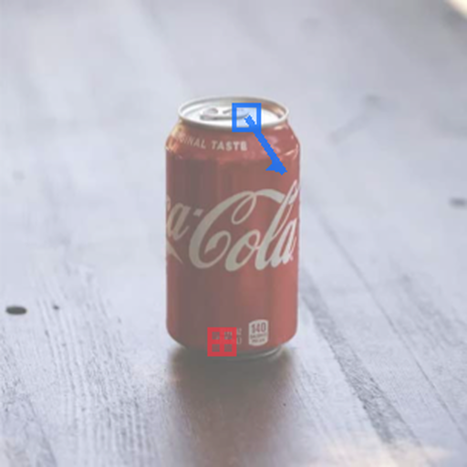
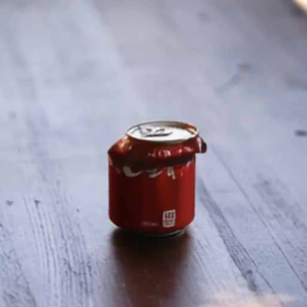
A hold patch at the base keeps the can grounded while a down-right push patch on the lid specifies the partial observation. PSI explains that observation as a deformation, crushing the can rather than translating it rigidly.
rgb1 = predictor.generate(
"rgb0,rgb1->rgb1",
rgb0=Image.open("can_rgb0.png"),
rgb1=rgb_prompt(
holds=[((144, 222), (0, 0))], # hold base
pushes=[((160, 76), (24, 36))], # push lid down-right
),
)Books Falling
Click to expand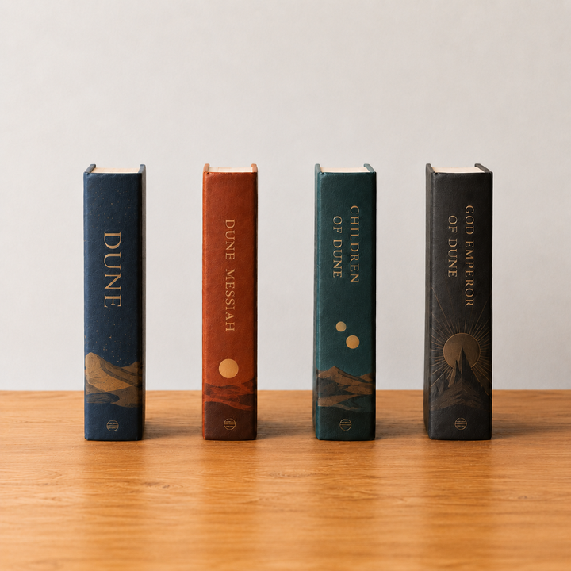
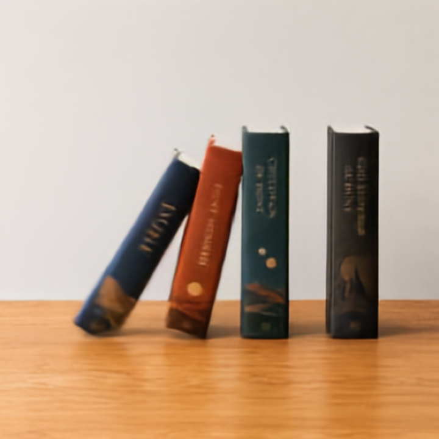
A single down-right flow patch on the top of the first book initiates the motion. PSI propagates that contact through the row, rendering a depth-aware next frame.
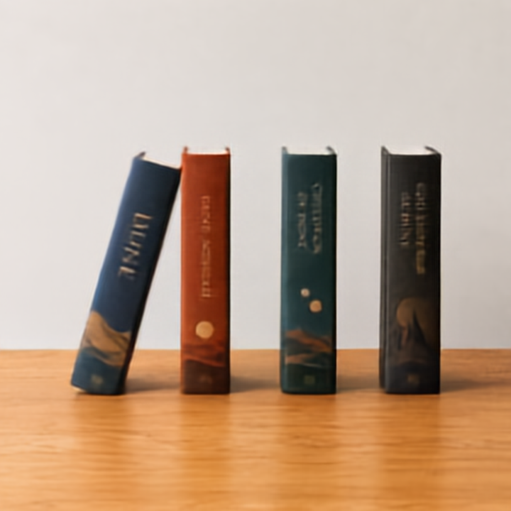
dense_flow, depth1, rgb1 = predictor.generate(
"rgb0,d0,f01->f01,d1,rgb1",
rgb0=Image.open("books_rgb0.png"),
d0=Image.open("books_d0.png"),
f01=flow_prompt(
pushes=[((140, 212), (236, 260))], # top book, down-right
),
)Box Push
Click to expand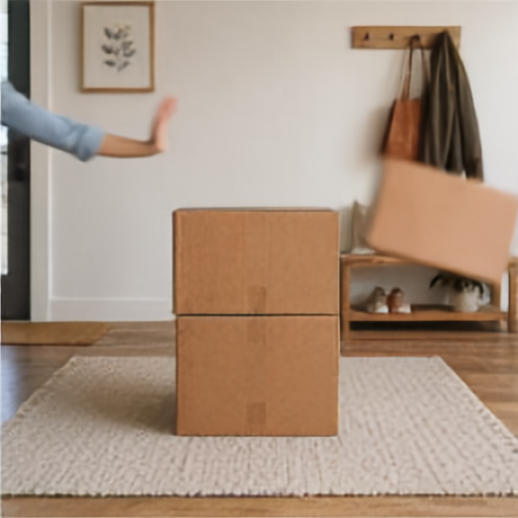
A single sparse optical-flow prompt tells PSI where the push should begin. PSI then densifies that local cue into a motion plan for the scene and renders the pushed-box future in RGB.
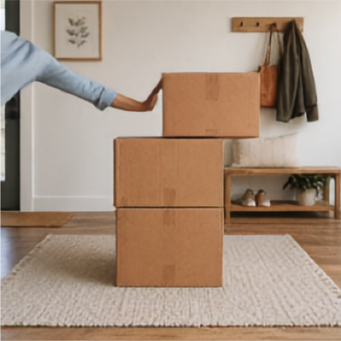
dense_flow, depth1, rgb1 = predictor.generate(
"rgb0,d0,f01->f01,d1,rgb1",
rgb0=Image.open("box.png"),
d0=Image.open("box_d0.png"),
f01=flow_prompt(poke=((72, 145), (202, 145))),
)
rgb2 = predictor.generate(
"rgb0,rgb1->rgb2",
rgb0=Image.open("box.png"),
rgb1=rgb1,
)Moving Lamp
Click to expandThe lifted lamp frame is used as an RGB conditioning target. PSI renders the coupled change in illumination across the wall and tabletop without a dense-flow stage.
rgb1_prompt = Image.open("desk_lamp_rgb1.png")
rgb1 = predictor.generate(
"rgb0,rgb1->rgb1",
rgb0=Image.open("desk_lamp.png"),
rgb1=rgb1_prompt,
)Articulated Objects & Mechanisms
Articulated Objects & Mechanisms
Objects with constrained parts, handles, caps, pages, or mechanisms that move through structured articulation.
Closing a Laptop
Click to expand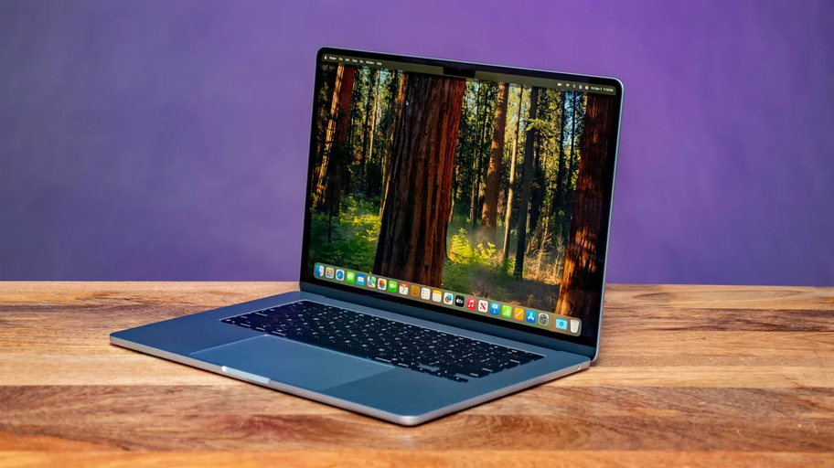
The lid follows a hinge-constrained motion plan: PSI closes the screen from the open frame to the final closed state.
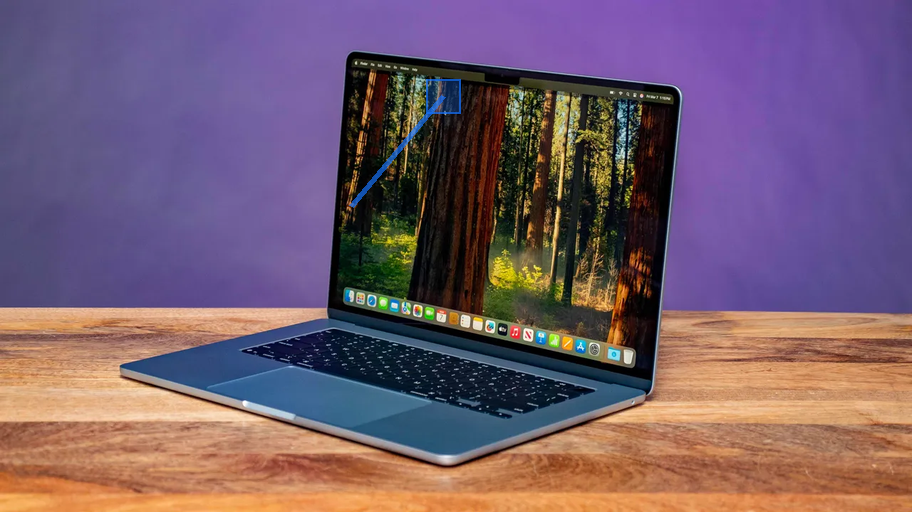
dense_flow, depth1, rgb1 = predictor.generate(
"rgb0,d0,f01->f01,d1,rgb1",
rgb0=Image.open("laptop_rgb0.png"),
d0=Image.open("laptop_d0.png"),
f01=hinge_flow_prompt(
screen="lid",
patches=[((443, 80), (-93, 118))], # close toward hinge
),
)Uncapping a Pen
Click to expandA hold patch keeps the pen body in place while a move patch pulls the cap down and to the right. PSI turns that local articulated prompt into a separated cap and body state.
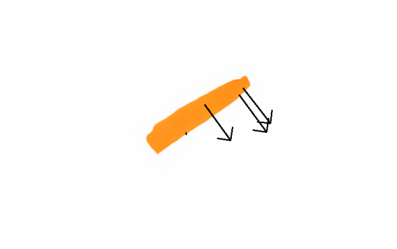
dense_flow, rgb1 = predictor.generate(
"rgb0,f01->f01,rgb1",
rgb0=Image.open("pen.png"),
f01=flow_prompt(
hold_patches=[(261, 221)], # hold pen body
patches=[((299, 165), (363, 221))], # pull cap right-down
),
)Unscrewing Cap
Click to expand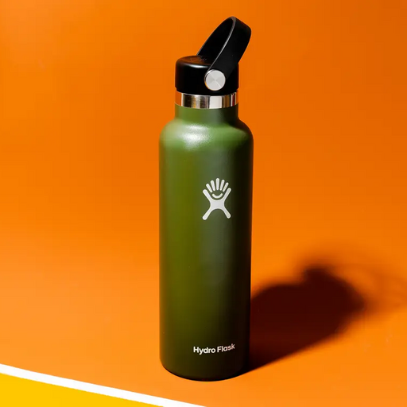
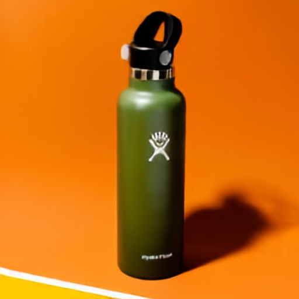
A curved sparse-flow prompt around the cap asks PSI to infer the coupled twist-and-lift motion that removes the cap from the bottle. The preview shows the single unscrewed target frame rather than a back-and-forth loop.
rgb0 = Image.open("bottle.png")
dense_flow, depth1, rgb1 = predictor.generate(
"rgb0,d0,f01->f01,d1,rgb1",
rgb0=rgb0,
d0=Image.open("bottle_d0.png"),
f01=flow_prompt(
cap_twist={
"center": (252, 90),
"radius": 46,
"rotation_degrees": -80,
"lift": (58, -78),
},
),
)Weight Pull
Click to expand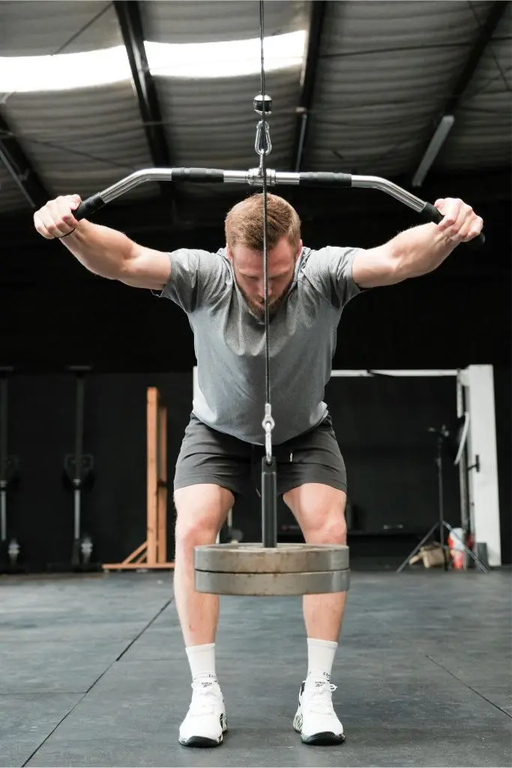
PSI supports precise optical-flow conditioning, so a small local prompt can specify the desired motion. The model densifies that sparse control into a scene-wide motion plan, then renders the resulting state back into RGB.
dense_flow, rgb1 = predictor.generate(
"rgb0,f01->f01,rgb1",
rgb0=Image.open("weight_lift.png"),
f01=flow_prompt(poke=((342, 760), (342, 592))),
)Turning a Page in a Book
Click to expandA single sparse flow poke on the left page starts the page moving, while four zero-flow corner patches anchor the scene. PSI densifies the flow and rolls out the page motion.
frames = predictor.generate(
"rgb0,f01->f01,rgb1...",
rgb0=Image.open("open-book.jpg"),
f01=flow_prompt(
poke=((230, 318), angle=7.25, max_flow=85),
holds=["top_left", "top_right", "bottom_left", "bottom_right"],
),
steps=8,
seed=303,
)Human Articulations
Human Articulations
Examples where the controllable object is a hand or body with linked joints and precise pose changes.
Closing a Hand
Click to expandThis example illustrates precise articulated control of a hand. Flow patches on the pointer, middle, and ring fingers close the hand, while zero-motion patches on the pinky and thumb preserve the rest pose.
rgb0 = Image.open("hand.png")
dense_flow, rgb1 = predictor.generate(
"rgb0,f01->f01,rgb1",
rgb0=rgb0,
f01=flow_prompt(
hold_patches=[
(232, 254), # thumb
(300, 274), # pinky
],
patches=[
((150, 132), (183, 173)), # pointer finger closes
((245, 142), (266, 184)), # middle finger closes
((271, 188), (271, 240)), # ring finger closes
],
),
)Ballet
Click to expandThis example shows direct manipulation of a human body. Hold patches stabilize the torso, grounded leg, and rear arm, while move patches pull the raised front hand and back leg down-forward. PSI densifies those sparse controls into f01 before rendering the new body pose in RGB.
dense_flow, rgb1 = predictor.generate(
"rgb0,f01->f01,rgb1",
rgb0=Image.open("ballet.png"),
f01=flow_prompt(
hold_patches=[(302, 265), (310, 470), (202, 250)],
patches=[
((398, 150), (412, 241)), # front hand down-forward
((137, 325), (192, 382)), # back leg down-forward
],
),
)Dexterous / Precision Manipulation
Dexterous / Precision Manipulation
Fine motor-control examples where small prompt differences determine delicate contact outcomes.
Threading a Needle
Click to expandOne right-up hand prompt asks PSI to carry the thread through the needle eye while preserving the thin-object contact geometry.
dense_flow, rgb1 = predictor.generate(
"rgb0,f01->f01,rgb1",
rgb0=Image.open("threading_needle.png"),
f01=flow_prompt(
patches=[((220, 206), (150, -52))], # hand moves farther right and up
),
)Picking a Fruit
Click to expandThe same RGB0 can branch into two PSI predictions from different sparse flow prompts. Pick Fruit uses one downward patch on the hand, while Release Fruit uses thumb and pinky patches that pull the hand open around the apple.
pick_flow, pick_rgb1 = predictor.generate(
"rgb0,f01->f01,rgb1",
rgb0=Image.open("fruit_pull_rgb0.png"),
f01=flow_prompt(
patches=[((165, 303), (0, 57))], # wrist pulls down
),
)
release_flow, release_rgb1 = predictor.generate(
"rgb0,f01->f01,rgb1",
rgb0=Image.open("fruit_pull_rgb0.png"),
f01=flow_prompt(
patches=[
((165, 303), (0, 57)), # wrist keeps pulling down
((198, 212), (-52, 48)), # thumb opens left-down
((308, 276), (56, 48)), # pinky opens down-right
],
),
)Deformable Materials
Deformable Materials
Non-rigid materials where sparse controls produce folds, tears, kneading, or stretching.
Paper
Click to expandPaper Tear shows irreversible deformation and non-rigid manipulation. The same hand patches either press inward to crumple the sheet or move outward in opposite directions, causing the densified flow to rip the paper apart.
press_flow, press_rgb1 = predictor.generate(
"rgb0,f01->f01,rgb1",
rgb0=Image.open("paper.png"),
f01=flow_prompt(
patches=[
((145, 217), (212, 217)), # left hand inward
((333, 217), (265, 217)), # right hand inward
],
),
)
tear_flow, tear_rgb1 = predictor.generate(
"rgb0,f01->f01,rgb1",
rgb0=Image.open("paper.png"),
f01=flow_prompt(
patches=[
((145, 217), (59, 217)), # left hand outward
((333, 217), (420, 217)), # right hand outward
],
),
)Shirt Folding
Click to expandA move patch pulls the red sleeve right and slightly downward, while hold patches keep the white shirt body fixed so the fold is localized to the sleeve.
dense_flow, rgb1 = predictor.generate(
"rgb0,f01->f01,rgb1",
rgb0=Image.open("shirt_rgb0.png"),
f01=flow_prompt(
move_patches=[((86, 160), (190, 223))], # red sleeve right/down
hold_patches=[
(252, 150),
(297, 262),
(237, 402),
(362, 377),
], # hold white shirt body
),
)Kneading Dough with Hands
Click to expandTwo compact hand prompts describe the kneading stroke: first the left hand drags the dough left, then it returns down and right. PSI fills the intermediate physical motion between the selected RGB keyframes.
rgb1 = predictor.generate(
"rgb0,prompt->rgb1",
rgb0=Image.open("dough.png"),
prompt=rgb_prompt(poke=((205, 306), (112, 306))),
)
rgb2 = predictor.generate(
"rgb1,prompt->rgb2",
rgb1=rgb1,
prompt=rgb_prompt(poke=((74, 276), (188, 344))),
)Pulling Toilet Paper off of Roll
Click to expandA single downward flow patch on the hand specifies the pull, and PSI densifies that sparse cue into motion over the paper.
dense_flow, rgb1 = predictor.generate(
"rgb0,f01->f01,rgb1",
rgb0=Image.open("toilet_paper.png"),
f01=flow_prompt(
patches=[((401, 419), (0, 81))], # hand pulls down
),
)Fluids
Fluids
Fluid and pouring examples where motion prompts affect liquids and containers.
Coffee Pouring
Click to expandThis coffee pouring example uses a coffee-pot rotation prompt. PSI densifies the motion, renders depth, and shows the next RGB frame.
dense_flow, depth1, rgb1 = predictor.generate(
"rgb0,d0,f01->f01,d1,rgb1",
rgb0=Image.open("coffee_pour_rgb0.png"),
d0=Image.open("coffee_pour_d0.png"),
f01=flow_prompt(
rotations=[((238, 202), "clockwise")],
),
)Stop Beer Pouring
Click to expandThis example uses the bundled PSI codes directly: a sparse optical-flow prompt nudges the bottle, PSI densifies the flow, and the RGB head renders the filled glass state.
dense_flow, rgb1 = predictor.generate(
"rgb0,f01->f01,rgb1",
rgb0=Image.open("beer_pour.png"),
f01=flow_codes("beer_pour_f01.codes.npy"),
frame_gap_seconds=0.2,
seed=0,
num_seq_patches=1024,
)Compositional Reasoning
Compositional Reasoning
Composed tasks where object motion, contact, appearance change, or tool use must stay coordinated.
Cleaning
Click to expandA single sparse optical-flow patch on the blue glove gives the down-left cleaning motion. PSI densifies that local prompt so the sponge drags a clean tile streak through the wall, then renders the next RGB frame.
dense_flow, rgb1 = predictor.generate(
"rgb0,f01->f01,rgb1",
rgb0=Image.open("cleaning.png"),
f01=flow_prompt(
patch=((456, 124), (-144, 92)), # blue glove
anchors=["top_right", "bottom_left", "bottom_right"],
),
)Hammer Nailing a Nail
Click to expandA two-phase prompt can drive the hammer down onto the nail and then pull it back up. A separate two-phase branch moves the hammer away from the nail and continues to its missed final state.
hammer_down = predictor.generate(
"rgb0,prompt->rgb1",
rgb0=Image.open("hammer.png"),
prompt=rgb_prompt(poke=((260, 100), (268, 152))),
)
hammer_nail = predictor.generate(
"rgb1,prompt->rgb2",
rgb1=hammer_down,
prompt=rgb_prompt(poke=((253, 140), (230, 75))),
)
miss_nail_1 = predictor.generate(
"rgb0,prompt->rgb1",
rgb0=Image.open("hammer.png"),
prompt=rgb_prompt(poke=((260, 100), (188, 54))),
)
miss_nail = predictor.generate(
"rgb1,prompt->rgb2",
rgb1=miss_nail_1,
prompt=rgb_prompt(poke=((222, 82), (222, 150))),
)Lighting Candle
Click to expandLight Candle drives the match to the wick. Move Away starts from the same hand point and moves the hand right, then farther right again. Extinguish Match moves the hand down and right, then slowly back up.
light_candle = predictor.generate(
"rgb0,rgb1->rgb1...",
rgb0=Image.open("candle.png"),
rgb1=rgb_prompt(pokes=[
((261, 131), (212, 151)),
((212, 151), (365, 151)),
]),
)
move_away_rgb1 = predictor.generate(
"rgb0,prompt->rgb1",
rgb0=Image.open("candle.png"),
prompt=rgb_prompt(poke=((365, 182), (445, 182))),
)
move_away_rgb2 = predictor.generate(
"rgb1,prompt->rgb2",
rgb1=move_away_rgb1,
prompt=rgb_prompt(poke=((439, 182), (519, 182))),
)
extinguish_match_rgb1 = predictor.generate(
"rgb0,prompt->rgb1",
rgb0=Image.open("candle.png"),
prompt=rgb_prompt(poke=((365, 182), (428, 251))),
)
extinguish_match_rgb2 = predictor.generate(
"rgb1,prompt->rgb2",
rgb1=extinguish_match_rgb1,
prompt=rgb_prompt(poke=((422, 251), (399, 171))),
)Novel View Synthesis
Novel View Synthesis
Camera-conditioned generations that move the viewpoint while preserving the scene.
Spinning Around Coffee Mug
Click to expandThis NVS example starts from the first frame of the video and applies a view-change flow prompt. PSI renders the next depth map and RGB frame for the new view.
depth1, rgb1 = predictor.generate(
"rgb0,d0,f01->d1,rgb1",
rgb0=Image.open("coffee_mug_000.png"),
d0=Image.open("coffee_mug_d0.png"),
f01=view_flow_prompt(direction="right"),
)Entering a House
Click to expandEntering a House first densifies a sparse door-opening flow prompt. After the door opens, PSI uses a depth-conditioned camera prompt to move into the room without another sparse-to-dense flow stage.
door_push = flow_prompt(
patches=[((138, 286), (93, 318))], # push door inward-left
)
forward = camera_prompt(translation=(0.0, 0.0, 0.55))
dense_flow, depth1, rgb1 = predictor.generate(
"rgb0,d0,f01->f01,d1,rgb1",
rgb0=Image.open("doorway_open.png"),
d0=Image.open("doorway_d0.png"),
f01=door_push,
)
depth2, rgb2 = predictor.generate(
"rgb0,d0,c01->d1,rgb1",
rgb0=rgb1,
d0=depth1,
c01=forward,
)